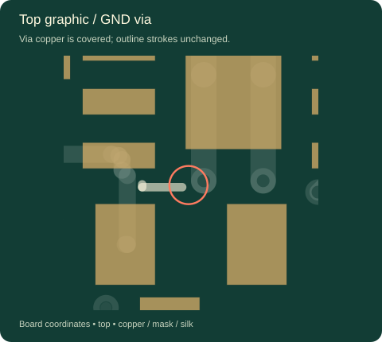
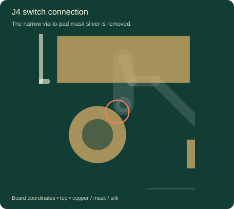
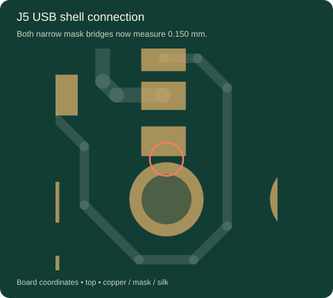
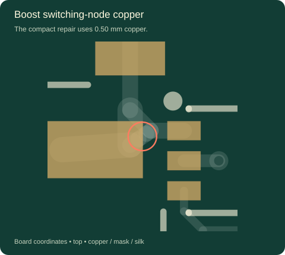
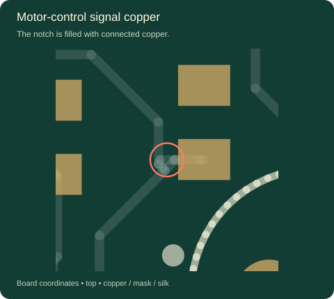
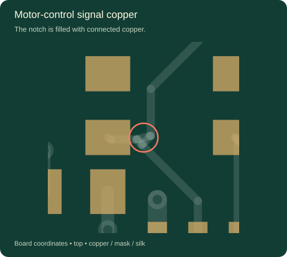

The details,
corrected.
The nine silkscreen clearance locations, three mask slivers and three same-net copper notches from the previous audit are resolved. Both IC Genie drawings stay exactly where you placed them.
Checked 5 October 2026 against JLCPCB’s PCB capabilities, for two-layer FR-4, 1 oz copper, 1.6 mm nominal thickness and a routed 32 × 82 mm outline. Numerical tolerance: 0.002 mm.
What changed
Cover routing vias; preserve the artwork
All 59 routing vias are now tented on both faces. Thirty forced mask openings were removed. This resolves the nine silk-to-exposed-via locations and the J4 pad-to-via mask sliver. The six dedicated test pads and connection pads remain exposed.
Both Genie drawings, every text label, the board outline, mounting holes and all 56 component positions match the manually cleaned v7 board.
Give the mask and copper clean edges
Mask expansion is 0.01 mm per side, producing 0.150 mm minimum mask bridges at the USB connector. The project mask-to-silkscreen rule is now 0.15 mm.
Three compact same-net repairs fill the SW, INA and IND notches. Nine short connected segments were added; the SW repair is 0.50 mm wide. All original traces and net contact lists remain intact.
Measured after correction
| Feature | Criterion, mm | Measured, mm | Result |
|---|---|---|---|
| Trace width | 0.10 | 0.254 | Pass |
| Different-net copper spacing | 0.10 | 0.200 | Pass |
| SMD pad spacing | 0.15 | 0.250 | Pass |
| Drill edge separation | 0.45 | 0.500 | Pass |
| Via drill / pad | 0.15 drill minimum | 0.300 / 0.600 | Pass |
| PTH annulus | 0.25 recommended | 0.325 | Pass |
| Copper to routed edge | 0.20 | 0.300 | Pass |
| Mask bridge | 0.10 / 0.13 by color | 0.150 | Pass |
| Mask opening to other-net trace | 0.10 | 0.200 | Pass |
| Graphic to exposed copper | 0.15 | 0.276 top / 0.284 bottom | Pass |
| Graphic to mask opening | 0.20 project target | 0.266 top / 0.274 bottom | Pass |
| Silk stroke / text height | 0.15 / 1.00 | 0.15 logo / 1.00 text | Pass |
The mask-bridge check conservatively uses actual mask opening separation, compared with JLCPCB’s published 0.10/0.13 mm guidance by color. The 0.01 mm expansion stays inside the published mask capability. Tenting is ordinary mask coverage; no epoxy fill or plugging is assumed. JLCPCB mask guidance.
Corrected detail views

Via copper is covered; outline strokes unchanged.

Large artwork is preserved in its chosen location.

The narrow via-to-pad mask sliver is removed.

Both narrow mask bridges now measure 0.150 mm.

The compact repair uses 0.50 mm copper.

The notch is filled with connected copper.

The notch is filled with connected copper.
Verification record
Fusion rebuilt both ground pours before the final DRC. The schematic remains linked, with the same 37 nets and 56 components. All 83 close trace-segment pairs in the coarse geometric search are covered by connected copper; no exposed same-net notch remains in that test.
The independent audit covers exported discrete traces, pads, vias, holes, mask openings and silk geometry. Fusion checks the filled-plane connectivity; final Gerbers are a separate release step. The 13 existing schematic supply-name ERC warnings are unchanged.
Exact change verification · Native checks · Cloud save record · Updated design rules
Still a prototype
The reported geometry findings are corrected. Before ordering, review the final Gerber/CAM package and assembly sourcing, synchronize Carrier C into the Rev B mechanical model, trial-fit the USB connector and SuperMini, and complete the previously documented electrical bench tests. No fabrication order or assembly release has been issued.